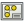
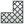
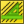

Le schermate delle preferenze del modulo TechDraw si trovano nella Finestra delle preferenze (Menu Modifica → Preferenze).
Le schermate delle preferenze potrebbero apparire leggermente diverse a seconda della piattaforma o dello schema di formattazione.
TechDraw 1
{kind=link}
Generale
- Projection Angle -  Gruppo di proiezioni usa la proiezione Primo o Terzo angolo. (vedere multiview projection)
- Hidden Line - lo stile (continua, tratteggiata, ecc.) da utilizzare per le linee nascoste.
- Detect Faces - se spuntato, TechDraw tenta di creare le facce usando i segmenti di linea restituiti dall'algoritmo di rimozione delle linee nascoste. Le facce devono essere rilevate per poter utilizzare i  tratteggi, ma nei modelli complessi può esserci una penalizzazione delle prestazioni.
- ShowSectionEdges - evidenzia il bordo della sezione tagliata nelle viste in sezione. Solitamente solo per il debug.
- KeepPagesUpToDate - mantenere le pagine del disegno in sincrono con il modello 3D in tempo reale può rallentare i tempi di risposta. Nei modelli complessi, deselezionare questa casella per avere risposte più rapide. Utilizzare la proprietà "KeepUpdated" della Pagina per aggiornare in modo selettivo una singola Pagina.
- Template Dot Size - Controlla la dimensione del punto verde utilizzato per selezionare il testo modificabile in un modello.
{kind=link}
{kind=link}
{kind=link}
Colori
qui si possono impostare i colori preferiti.
Etichette
- Label Font - il nome del carattere predefinito per le etichette.
- Label Size - dimensione predefinita ( in mm) per il testo dell'etichetta.
- Template dot size - dimensione del punto unità verde in unità
File
- Default Template - utilizzare questo selettore di file per selezionare un file modello predefinito per i disegni.
- Template Directory - la directory di partenza per creare una
 Nuova pagina da modello.
Nuova pagina da modello. - Hatch Image - file di default Svg o Bitmap per il tratteggio.
- PAT File - file di definizione del modello PAT predefinito per il tratteggio.
- Pattern Name - il nome del motivo PAT preferito.
{kind=link}
TechDraw 2
{kind=link}
Dimensioni
- Show Units - aggiunge l'unità di misura (mm, in, ecc.) ai valori.
- Use Global Decimals - utilizzare il numero di decimali indicato in Preferenze>Generale>Unità.
- Alternate Decimals - se Use Global Decimals è deselezionato, utilizza questo numero di decimali.
- Font Size - dimensione per il testo delle dimensioni.
- Color - colore predefinito per il testo e le linee di quota.
- Diameter Symbol - le dimensioni di diametro saranno precedute da questo testo.
- Arrow Style - scegliere il segno di fine della linea di quota che si preferisce.
- Arrow Size - dimensione del segno finale in mm.
Decorazioni
- Line Group - il nome di default delle linee raggruppate.
- Matting Style - mostra le viste dei dettagli come cerchi o rettangoli.
- Center Line Style - stile predefinito per Visualizzare le linee centrali (orizzontale e verticale).
- Center Line Color - colore predefinito per Visualizzare le linee centrali.
- Section Line Style - stile predefinito per la linea di sezione nella Vista base di una Vista in sezione.
- Section Line Color - colore predefinito per le linee di sezione.
- Hatch Weight - spessore di linea predefinito per i  tratteggi geometrici. Vedere tratteggio.
{kind=link}
{kind=link}
Ritorna a TechDraw.